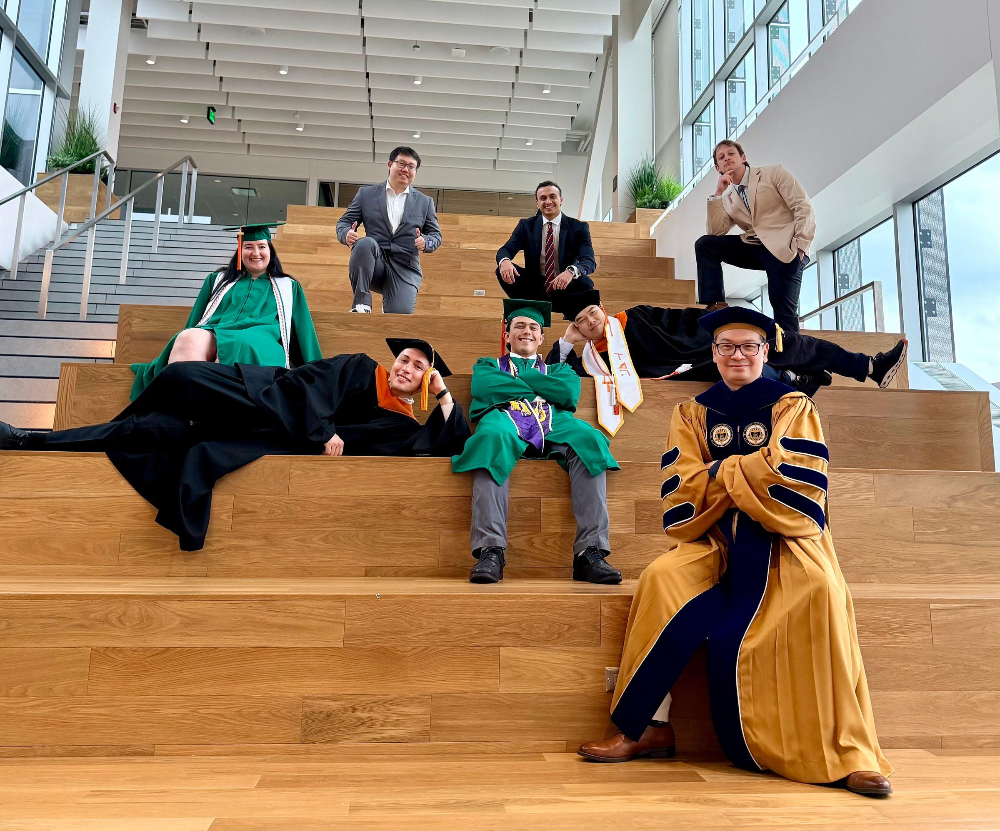

After a summer of big moves, I'm really proud to see that all of our RISE Materials Lab alumni (postdoc, PhD, MS and undergrad) have landed great positions and places, with a bright future ahead. 🚀
• Dr. Brandon Byers, Ph.D. joined FedTech as a Technology and Venture Consultant in June 2026, focusing on commercializing disruptive technologies.
• Dr. Xiaoqiang Ni joined WSP as a Structural Engineer III in July 2026, where he's putting his expertise in concrete design and materials science into practice.
• Dr. Matias Leon-Miquel recently joined ICON as a Materials Engineer II, where he's bringing his passion for 3D printing and space concrete to real-world applications.
• Nate Denning is starting graduate school at Civil and Environmental Engineering at Stanford University this fall focusing on Sustainable Design and Construction.
• Kelly Couvreur, EIT has started as a Structural Designer at Benesch, while continuing to pursue a master's degree in structural engineering at Michigan State University Department of Civil and Environmental Engineering.
Our earlier alumni keep making us proud too:
• Brennan Sollenberger is a Transmission Line EIT II at HDR.
• Quentin Greiner, PE is now an Associate at Ruby+Associates, a Degenkolb Company.
• Madelyn Grant is starting her 2nd year of graduate school at Stanford University.
Watching each of them grow, from their first days in our group to where they are now, has been the most rewarding part of being an advisor and a mentor. Every one of them helped build RISE into what it is today, and they'll always be part of the RISE Materials Lab family.
Can't wait to see what they achieve next, with more stories like these to come from our current RISE members, Dr. Peizhi Wang, Diego Aparicio Vallejos, Yinjian “Klay” Li, Minseok Nam, and Lauren Abernathy.
Go Green! 💚🤍
#SpartansWill #CivilEngineering #Mentorship

